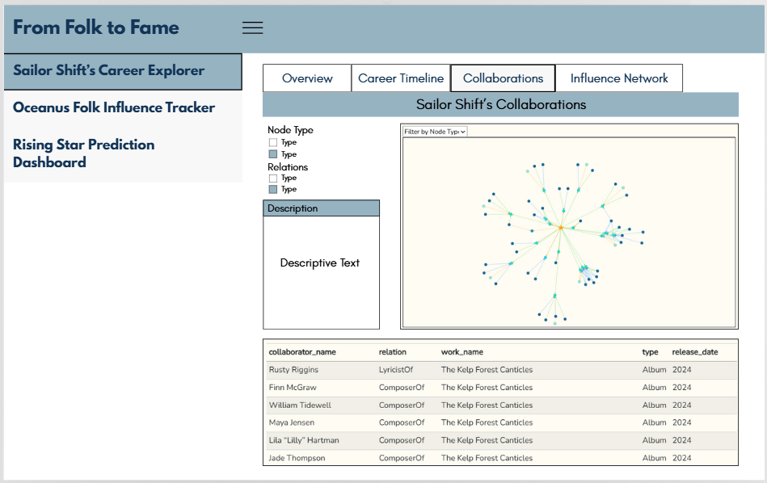

pacman::p_load(tidyverse, jsonlite,
tidygraph, ggraph, igraph, plotly, visNetwork,ggtext, ggiraph,patchwork,
kableExtra, showtext,lubridate)
library(dplyr)Take Home Exercise 3
Prototype Module for Shiny Application
1 Prototype Module for Shiny Application
1.1 The Task
In this take-home exercise, we are required to select one of the modules of our proposed Shiny application (Group Project) and complete the following tasks
To evaluate and determine the necessary R packages needed for our Shiny application are supported in R CRAN,
To prepare and test that the specific R codes can run and returns the correct output as expected,
To determine the parameters and outputs that will be exposed on the Shiny applications,
To select the appropriate Shiny UI components for exposing the parameters determined above, and
To include a section called UI design for the different components of the UIs for the proposed design.
We are required to prepare the prototype module report as Take-home Exercise 3 submission.
We are required to include a section called UI design for the different components of the UIs for the proposed design.
1.2 Getting Started
Our project will be using data from the VAST Challenge 2025 Mini-Challenge 1.
Specifically, our project will focus on Mini-Challenge 1, where participants are provided with a knowledge graph containing recording artists, albums, collaborations, concerts, influences, and more. The goal is to develop visual analytics approaches to trace the rise of one artist and predict who will be the next to break out.
In addition, we plan to develop the following Shiny applications:
- Shiny App 1: Sailor Shift’s Career Explorer
- Shiny App 2: Oceanus Folk Influence Tracker
- Shiny App 3: Rising Star Prediction Dashboard
For this take-home exercise, I will be providing the prototype module report and the UIs designed for the above applications.
1.3 Loading R Packages
1.4 Importing and Loading Data
data <- fromJSON("data/MC1_graph.json")1.5 Custom Theme
font_add_google("Montserrat", "montserrat")
theme <- list(
font = 'montserrat',
size=14,
background = element_rect(fill = "#FEFCF3",color = NA),
title = element_text(
size = 16,
face = "bold",
color = "black"),
fill = "#96b3c2",
panel = element_rect(fill = "#FEFCF3", color = NA),
grid = element_line(color = "#E6DCD0")
)
edge_colors <- c(
"PerformerOf" = "#FFA500",
"ComposerOf" = "#1E90FF",
"LyricistOf" = "#32CD32",
"ProducerOf" = "#FFD700"
)
node_colors <- c(
"Person" = "#176BA0",
"Song" = "#1B9ADE",
"Album" = "#1AE8E9",
"MusicalGroup" = "#9DF0E2",
"RecordLabel" = "#CFF9F8"
)1.6 Data Preparation and Cleaning
1.6.1 Extracting Edges & Nodes
edges <- as_tibble(data$links)
edgefunction (...)
{
structure(list(...), class = "igraph.edge")
}
<bytecode: 0x0000023356fb8c80>
<environment: namespace:igraph>nodes <- as_tibble(data$nodes)
nodes# A tibble: 17,412 × 10
`Node Type` name single release_date genre notable id written_date
<chr> <chr> <lgl> <chr> <chr> <lgl> <int> <chr>
1 Song Breaking Th… TRUE 2017 Ocea… TRUE 0 <NA>
2 Person Carlos Duffy NA <NA> <NA> NA 1 <NA>
3 Person Min Qin NA <NA> <NA> NA 2 <NA>
4 Person Xiuying Xie NA <NA> <NA> NA 3 <NA>
5 RecordLabel Nautical Mi… NA <NA> <NA> NA 4 <NA>
6 Song Unshackled … FALSE 2026 Lo-F… TRUE 5 <NA>
7 Person Luke Payne NA <NA> <NA> NA 6 <NA>
8 Person Xiulan Zeng NA <NA> <NA> NA 7 <NA>
9 Person David Frank… NA <NA> <NA> NA 8 <NA>
10 RecordLabel Colline-Cas… NA <NA> <NA> NA 9 <NA>
# ℹ 17,402 more rows
# ℹ 2 more variables: stage_name <chr>, notoriety_date <chr>colnames(nodes)[colnames(nodes) == "Node Type"] <- "type"
colnames(edges)[colnames(edges) == "Edge Type"] <- "relation"1.6.2 Checking Missing Values
colSums(is.na(nodes)) type name single release_date genre
0 0 13797 12801 12801
notable id written_date stage_name notoriety_date
12801 0 15957 16889 16763 1.7 Knowledge Graph
1.7.1 Mapping from Node ID to Row Index
id_map <- tibble(id = nodes$id,
index = seq_len(
nrow(nodes)))1.7.2 Map Source and Target IDs to Row Indices
edges <- edges %>%
left_join(id_map, by = c("source" = "id")) %>%
rename(from = index) %>%
left_join(id_map, by = c("target" = "id")) %>%
rename(to = index)1.7.3 Filtering Unmatched Edges
edges <- edges %>%
filter(!is.na(from), !is.na(to))1.7.4 Plotting the Graph
graph <- tbl_graph(nodes = nodes, edges = edges, directed = data$directed)1.8 Sailor Shift’s Career Explorer
nodes <- graph %>%
activate(nodes) %>%
as_tibble() %>%
mutate(row_id = row_number())edges <- graph %>%
activate(edges) %>%
as_tibble()sailor_id <- nodes %>%
filter(name == "Sailor Shift") %>%
pull(row_id)
group_id <- edges %>%
filter(from == sailor_id, relation == "MemberOf") %>%
pull(to)1.8.1 Tab 1 : Overview
sailor_releases <- edges %>%
filter(from == sailor_id, relation == "PerformerOf") %>%
pull(to)
group_releases <- edges %>%
filter(from == group_id, relation == "PerformerOf") %>%
pull(to)
all <- union(sailor_releases, group_releases)
release_years <- nodes %>%
filter(row_id %in% all,
(
(type == "Song" & single == TRUE) |
(type == "Album")
)) %>%
mutate(release_year = as.integer(release_date)) %>%
filter(!is.na(release_year)) %>%
pull(release_year) %>%
unique() %>%
sort()
paste0(min(release_years), "–", max(release_years))[1] "2024–2040"total_releases <- nodes %>%
filter(
row_id %in% all,
(
(type == "Song" & single == TRUE) |
(type == "Album")
)
) %>%
nrow()
total_releases[1] 21collab_roles <- c("PerformerOf", "ComposerOf", "LyricistOf", "ProducerOf")
sailor_songs <- graph %>%
activate(edges) %>%
filter(from == sailor_id, relation %in% collab_roles) %>%
pull(to)
collab_edges <- graph %>%
activate(edges) %>%
filter(to %in% sailor_songs, relation %in% collab_roles, from != sailor_id) %>%
pull(from) %>%
unique()
length(collab_edges)[1] 48roles <- graph %>%
activate(edges) %>%
as_tibble() %>%
filter(from == sailor_id) %>%
pull(relation) %>%
unique()
length(roles)[1] 6charted <- nodes %>%
filter(
row_id %in% all,
(
(type == "Song" & single == TRUE) |
(type == "Album")
),
notable == TRUE
)
charted_count <- nrow(charted)
charted_count[1] 15ratio <- round((charted_count / total_releases) * 100)
paste0(ratio,'%')[1] "71%"1.8.1.1 UI Design

1.8.2 Tab 2 : Career Timeline
release_summary <- nodes %>%
filter(
row_id %in% all,
(type == "Song" & single == TRUE) | type == "Album"
) %>%
mutate(
year = as.integer(release_date)
) %>%
filter(!is.na(year)) %>%
count(year, type, name = "n")
ggplot(release_summary, aes(x = factor(year, levels = sort(unique(year), decreasing = TRUE)), y = n, fill = type)) +
geom_col() +
scale_fill_manual(
values = c(
"Song" = "#466575",
"Album" = "#96b3c2"
)
) +
labs(
title = "Sailor Shift's Releases by Year (Songs vs Albums)",
x = "Year",
y = "Number of Releases",
fill = "Release Type"
) +
coord_flip() +
theme_minimal() +
theme(
plot.background = theme$background,
panel.background = theme$panel,
panel.grid.major = theme$grid,
text = element_text(size = theme$size),
plot.title = theme$title,
)release_summary <- nodes %>%
filter(
row_id %in% all,
(type == "Song" & single == TRUE) | type == "Album"
) %>%
mutate(
year = as.integer(release_date)
)
kable(release_summary)| type | name | single | release_date | genre | notable | id | written_date | stage_name | notoriety_date | row_id | year |
|---|---|---|---|---|---|---|---|---|---|---|---|
| Album | The Kelp Forest Canticles | NA | 2024 | Oceanus Folk | TRUE | 17261 | 2023 | NA | NA | 17262 | 2024 |
| Album | Luminescent Tides | NA | 2025 | Oceanus Folk | TRUE | 17262 | 2024 | NA | NA | 17263 | 2025 |
| Album | Shoreline Sonnets | NA | 2026 | Oceanus Folk | TRUE | 17263 | 2025 | NA | NA | 17264 | 2026 |
| Song | Sunken Bell Song | TRUE | 2024 | Oceanus Folk | FALSE | 17264 | NA | NA | NA | 17265 | 2024 |
| Song | The Angler’s Lantern | TRUE | 2025 | Oceanus Folk | FALSE | 17267 | NA | NA | NA | 17268 | 2025 |
| Song | Salt-Kissed Rhymes | TRUE | 2026 | Oceanus Folk | TRUE | 17270 | NA | NA | NA | 17271 | 2026 |
| Album | Tidal Pop Waves | NA | 2028 | Oceanus Folk | TRUE | 17272 | 2027 | NA | NA | 17273 | 2028 |
| Album | Salty Dreams | NA | 2030 | Oceanus Folk | TRUE | 17273 | 2029 | NA | NA | 17274 | 2030 |
| Album | The Current & The Chord | NA | 2032 | Oceanus Folk | TRUE | 17274 | 2031 | NA | NA | 17275 | 2032 |
| Album | Coral Beats | NA | 2034 | Oceanus Folk | TRUE | 17275 | 2033 | NA | NA | 17276 | 2034 |
| Album | Tides & Ballads | NA | 2036 | Oceanus Folk | TRUE | 17276 | 2035 | NA | NA | 17277 | 2036 |
| Album | Oceanbound | NA | 2038 | Oceanus Folk | TRUE | 17277 | 2037 | NA | NA | 17278 | 2038 |
| Album | Echoes of the Deep | NA | 2040 | Oceanus Folk | TRUE | 17278 | 2039 | NA | NA | 17279 | 2040 |
| Song | High Tide Heartbeat | TRUE | 2028 | Oceanus Folk | FALSE | 17279 | NA | NA | NA | 17280 | 2028 |
| Song | Heart of the Habitat | TRUE | 2030 | Oceanus Folk | FALSE | 17283 | NA | NA | NA | 17284 | 2030 |
| Song | Into the Current | TRUE | 2034 | Oceanus Folk | FALSE | 17288 | NA | NA | NA | 17289 | 2034 |
| Song | The Fisherman’s Prayer | TRUE | 2036 | Oceanus Folk | FALSE | 17291 | NA | NA | NA | 17292 | 2036 |
| Song | Stormsong | TRUE | 2038 | Oceanus Folk | TRUE | 17292 | NA | NA | NA | 17293 | 2038 |
| Album | Tidesworn Ballads | NA | 2031 | Oceanus Folk | TRUE | 17350 | 2030 | NA | NA | 17351 | 2031 |
| Album | Submerged Sonatas | NA | 2031 | Oceanus Folk | TRUE | 17356 | 2030 | NA | NA | 17357 | 2031 |
| Song | Seashell Serenade | TRUE | 2030 | Oceanus Folk | TRUE | 17410 | NA | NA | 2030 | 17411 | 2030 |
Ideas
Based on the code above, the following variables can be exposed as user inputs:
Year (SliderInput)
Release Type (filter between Songs and Albums)
1.8.2.1 UI Design

1.8.3 Tab 3 : Collaborations
collab_types <- c("PerformerOf", "ComposerOf", "ProducerOf", "LyricistOf")
sailor_works <- edges %>%
filter(from == sailor_id, relation %in% collab_types) %>%
pull(to)
collab_edges <- graph %>%
activate(edges) %>%
filter(to %in% sailor_works, relation %in% collab_types) %>%
filter(from != sailor_id) %>%
as_tibble()
collab_node_ids <- unique(c(sailor_id, collab_edges$from, collab_edges$to))
subgraph <- graph %>%
as.igraph() %>%
induced_subgraph(vids = collab_node_ids) %>%
as_tbl_graph() %>%
activate(edges) %>%
filter(relation %in% collab_roles) %>%
activate(nodes) %>%
mutate(label = case_when(
type == "Song" ~ paste0(name, " (", release_date, ")"),
TRUE ~ name
))nodes_df <- subgraph %>%
activate(nodes) %>%
as_tibble() %>%
mutate(
id = row_number(),
group = type,
title = paste("Type:", type),
color = ifelse(name == "Sailor Shift", "orange", node_colors[type]),
shape = ifelse(name == "Sailor Shift", "star", "dot"),
size = ifelse(name == "Sailor Shift", 30, 15)
) %>%
select(id, label, group, title, color, shape, size)
id_map <- tibble(index = seq_len(nrow(nodes_df)), node_id = pull(subgraph %>% activate(nodes), name))
edges_df <- subgraph %>%
activate(edges) %>%
as_tibble() %>%
mutate(
from = as.integer(from),
to = as.integer(to),
color = edge_colors[relation],
arrows = "to",
title = paste("Relation:", relation)
) %>%
select(from, to, color, arrows,title)
visNetwork(nodes_df, edges_df) %>%
visIgraphLayout(layout = "layout_with_fr") %>%
visOptions(highlightNearest = TRUE, selectedBy = list(variable = "group", main = "Filter by Node Type"),) %>%
visLayout(randomSeed = 123) %>%
visEdges(smooth = FALSE)collab_table <- collab_edges %>%
left_join(nodes %>% select(row_id, collaborator_name = name), by = c("from" = "row_id")) %>%
left_join(nodes %>% select(row_id, work_name = name, type, release_date), by = c("to" = "row_id")) %>%
select(
collaborator_name,
relation,
work_name,
type,
release_date
) %>%
arrange(release_date)
kable(collab_table)| collaborator_name | relation | work_name | type | release_date |
|---|---|---|---|---|
| Rusty Riggins | LyricistOf | The Kelp Forest Canticles | Album | 2024 |
| Finn McGraw | ComposerOf | The Kelp Forest Canticles | Album | 2024 |
| William Tidewell | ComposerOf | The Kelp Forest Canticles | Album | 2024 |
| Maya Jensen | ComposerOf | The Kelp Forest Canticles | Album | 2024 |
| Lila “Lilly” Hartman | ComposerOf | The Kelp Forest Canticles | Album | 2024 |
| Jade Thompson | ComposerOf | The Kelp Forest Canticles | Album | 2024 |
| Sophie Ramirez | LyricistOf | The Kelp Forest Canticles | Album | 2024 |
| Ivy Echos | PerformerOf | The Kelp Forest Canticles | Album | 2024 |
| Maya Jensen | ComposerOf | Luminescent Tides | Album | 2025 |
| Lila “Lilly” Hartman | ComposerOf | Luminescent Tides | Album | 2025 |
| Jade Thompson | ComposerOf | Luminescent Tides | Album | 2025 |
| Sophie Ramirez | LyricistOf | Luminescent Tides | Album | 2025 |
| Ivy Echos | PerformerOf | Luminescent Tides | Album | 2025 |
| Rusty Riggins | LyricistOf | Shoreline Sonnets | Album | 2026 |
| Maya Jensen | ComposerOf | Shoreline Sonnets | Album | 2026 |
| Lila “Lilly” Hartman | ComposerOf | Shoreline Sonnets | Album | 2026 |
| Jade Thompson | ComposerOf | Shoreline Sonnets | Album | 2026 |
| Sophie Ramirez | LyricistOf | Shoreline Sonnets | Album | 2026 |
| Ivy Echos | PerformerOf | Shoreline Sonnets | Album | 2026 |
| Liam O’Sullivan | ComposerOf | Tidal Pop Waves | Album | 2028 |
| Fiona Mercer | ComposerOf | Tidal Pop Waves | Album | 2028 |
| Kai Reynolds | LyricistOf | Tides of Echos | Album | 2029 |
| Aiden Harper | LyricistOf | Tides of Echos | Album | 2029 |
| Finn Morgan | LyricistOf | Tides of Echos | Album | 2029 |
| Skylar Brooks | LyricistOf | Tides of Echos | Album | 2029 |
| The Wave Riders | PerformerOf | Tides of Echos | Album | 2029 |
| Kai Reynolds | PerformerOf | Seashell Serenade | Song | 2030 |
| Zane Cruz | LyricistOf | Neon Heartbeat | Album | 2031 |
| Iris Moon | ComposerOf | Neon Heartbeat | Album | 2031 |
| Violet Engines | PerformerOf | Neon Heartbeat | Album | 2031 |
| Mia Waters | LyricistOf | Hidden Depths | Album | 2031 |
| Lila Rivers | ComposerOf | Hidden Depths | Album | 2031 |
| Siren’s Call | PerformerOf | Hidden Depths | Album | 2031 |
| Beatrice Albright | PerformerOf | Tidesworn Ballads | Album | 2031 |
| Beatrice Albright | LyricistOf | Tidesworn Ballads | Album | 2031 |
| Beatrice Albright | PerformerOf | Tidesworn Ballads | Album | 2031 |
| Daniel O’Connell | PerformerOf | Submerged Sonatas | Album | 2031 |
| Daniel O’Connell | ComposerOf | Submerged Sonatas | Album | 2031 |
| Daniel O’Connell | PerformerOf | Submerged Sonatas | Album | 2031 |
| Sophie Bennett | ComposerOf | Ballads for the End of Time | Album | 2033 |
| Michael Harris | LyricistOf | Ballads for the End of Time | Album | 2033 |
| Kara Lee | LyricistOf | Ballads for the End of Time | Album | 2033 |
| Ethan Clarke | ComposerOf | Ballads for the End of Time | Album | 2033 |
| Tidal Reverie | PerformerOf | Ballads for the End of Time | Album | 2033 |
| Olivia Carter | ComposerOf | Melancholy Circuitry | Album | 2033 |
| Lucas Bennett | ComposerOf | Melancholy Circuitry | Album | 2033 |
| Maya Torres | ComposerOf | Melancholy Circuitry | Album | 2033 |
| Crimson Carriage | PerformerOf | Melancholy Circuitry | Album | 2033 |
| Arlo Sterling | LyricistOf | Drifting Between the Stars and the Sea | Album | 2034 |
| Lyra Blaze | ComposerOf | Drifting Between the Stars and the Sea | Album | 2034 |
| Orion Cruz | ComposerOf | Drifting Between the Stars and the Sea | Album | 2034 |
| Elara May | ComposerOf | Drifting Between the Stars and the Sea | Album | 2034 |
| Cassian Rae | ComposerOf | Drifting Between the Stars and the Sea | Album | 2034 |
| The Brine Choir | PerformerOf | Drifting Between the Stars and the Sea | Album | 2034 |
| Ewan MacCrae | LyricistOf | Coral Beats | Album | 2034 |
| Astrid Nørgaard | ComposerOf | Coral Beats | Album | 2034 |
| Freya Lindholm | ComposerOf | Coral Beats | Album | 2034 |
| Arlo Sterling | LyricistOf | Artificial Sunsets | Album | 2035 |
| Lyra Blaze | ComposerOf | Artificial Sunsets | Album | 2035 |
| Orion Cruz | ComposerOf | Artificial Sunsets | Album | 2035 |
| Elara May | ComposerOf | Artificial Sunsets | Album | 2035 |
| Cassian Rae | ComposerOf | Artificial Sunsets | Album | 2035 |
| The Brine Choir | PerformerOf | Artificial Sunsets | Album | 2035 |
| Coralia Bellweather | ComposerOf | Tides & Ballads | Album | 2036 |
| Levi Holloway | LyricistOf | Tides & Ballads | Album | 2036 |
| Zachary Cole | LyricistOf | Ballads for the Low Tide | Album | 2037 |
| Lia Grant | LyricistOf | Ballads for the Low Tide | Album | 2037 |
| Selkie’s Hollow | PerformerOf | Ballads for the Low Tide | Album | 2037 |
| Maya Jensen | ComposerOf | Ballads for the Low Tide | Album | 2037 |
| Arlo Sterling | LyricistOf | Electric Reverie | Album | 2038 |
| Lyra Blaze | ComposerOf | Electric Reverie | Album | 2038 |
| Orion Cruz | ComposerOf | Electric Reverie | Album | 2038 |
| Elara May | ComposerOf | Electric Reverie | Album | 2038 |
| Cassian Rae | ComposerOf | Electric Reverie | Album | 2038 |
| The Brine Choir | PerformerOf | Electric Reverie | Album | 2038 |
| Ewan MacCrae | LyricistOf | Oceanbound | Album | 2038 |
| Freya Lindholm | ComposerOf | Oceanbound | Album | 2038 |
| Marin Thorne | ComposerOf | Echoes of the Deep | Album | 2040 |
| Jonah Calloway | LyricistOf | Echoes of the Deep | Album | 2040 |
Ideas
Based on the network structure, the following variables can be exposed as user inputs:
Node Type (checkboxGroupInput)
Edge Type (Relation) (checkboxGroupInput)
1.8.3.1 UI Design

1.8.4 Tab 4 : Influence Network
1.8.4.1 Network Graph
influence_types <- c("InStyleOf", "CoverOf", "LyricalReferenceTo", "InterpolatesFrom", "DirectlySamples")
works <- c("PerformerOf", "ComposerOf", "ProducerOf", "LyricistOf")
sailor_works <- edges %>%
filter(from == sailor_id, relation %in% works) %>%
pull(to)
influenced_nodes <- edges %>%
filter(from %in% sailor_works, relation %in% influence_types)
influenced_works <- influenced_nodes$to
performer_edges <- edges %>%
filter(relation == "PerformerOf", to %in% influenced_works)
performer_ids <- performer_edges$from
sailor_node <- nodes %>%
filter(row_id == sailor_id) %>%
transmute(id = row_id, label = name, group = "Sailor", level = 1)
works_nodes <- nodes %>%
filter(row_id %in% sailor_works) %>%
transmute(id = row_id, label = name, group = "SailorWork", level = 2)
influencer_nodes <- nodes %>%
filter(row_id %in% influenced_works) %>%
transmute(id = row_id, label = name, group = "InfluencedWork", title = paste0("Genre :", genre),level = 3)
performer_nodes <- nodes %>%
filter(row_id %in% performer_ids) %>%
mutate(
code = ifelse(type == "Person", "f007", "f0c0"),
color = ifelse(type == "Person", node_colors["Person"], node_colors["MusicalGroup"])
) %>%
transmute(
id = row_id,
label = name,
group = "Performer",
title = paste("Type: ", type),
level = 4,
shape = "icon",
icon.code = code,
icon.color = color
)
all_nodes <- bind_rows(sailor_node, works_nodes, influencer_nodes, performer_nodes)
edges1 <- edges %>%
filter(from == sailor_id, to %in% sailor_works, relation %in% works) %>%
select(from, to, relation)
edges2 <- influenced_nodes %>%
select(from, to, relation)
edges3 <- performer_edges %>%
select(from, to, relation)
all_edges <- bind_rows(edges1, edges2, edges3)
visNetwork(all_nodes, all_edges) %>%
visNodes(shape = "dot", size = 20) %>%
visEdges(arrows = "to") %>%
visOptions(highlightNearest = TRUE, nodesIdSelection = TRUE) %>%
visLegend() %>%
addFontAwesome() %>%
visLayout(randomSeed = 42)influence_details <- influenced_nodes %>%
left_join(nodes %>% select(row_id, from_label = name), by = c("from" = "row_id")) %>%
left_join(nodes %>% select(row_id, to_label = name, to_genre = genre), by = c("to" = "row_id")) %>%
select(from_label, relation, to_label, to_genre) %>%
rename(
`Sailor Shift Work` = from_label,
`Influence Type` = relation,
`Other Artist Work` = to_label,
`Genre` = to_genre
)
kable(influence_details)| Sailor Shift Work | Influence Type | Other Artist Work | Genre |
|---|---|---|---|
| Melancholy Circuitry | CoverOf | Twilight’s Threshold | Synthwave |
| Electric Reverie | InStyleOf | Folklore’s Heartbeat | Blues Rock |
| Electric Reverie | InterpolatesFrom | Reflejo Interior | Americana |
| Tides of Echos | InterpolatesFrom | Weathered Miles | Doom Metal |
| Tides of Echos | InStyleOf | The Long Way Home | Dream Pop |
| The Kelp Forest Canticles | DirectlySamples | Hallowed Transaction | Doom Metal |
| The Kelp Forest Canticles | CoverOf | Für uns alle zusammen | Alternative Rock |
| Salty Dreams | InStyleOf | Susurros de Pasión | Synthwave |
| Salty Dreams | CoverOf | Partisan’s Lament | Indie Pop |
| Coral Beats | CoverOf | Harvest Dance at Ler Valley | Psychedelic Rock |
| Coral Beats | InStyleOf | Sacred Fragments | Synthwave |
| Oceanbound | LyricalReferenceTo | Bold Without Apology | Indie Rock |
| Oceanbound | LyricalReferenceTo | Altitude of Mistakes | Americana |
| High Tide Heartbeat | InterpolatesFrom | Addicted to Your Heartache | Southern Gothic Rock |
| Electric Eel Love | CoverOf | The Crown We Wear | Indie Rock |
| Electric Eel Love | InStyleOf | Twelve Bells of Augsburg | Psychedelic Rock |
| Driftwood Lullaby | InStyleOf | Echoes of Forgotten Light | Alternative Rock |
| Saltwater Hymn | InStyleOf | Parallel Memories | Dream Pop |
| Moon Over the Tide | LyricalReferenceTo | Silent Steps in the Forest’s Embrace | Avant-Garde Folk |
| Moon Over the Tide | InterpolatesFrom | Divergent Memories | Indie Folk |
| Barnacle Heart | InStyleOf | Our Inevitable Path | Indie Folk |
| Fog & Fiddle | InterpolatesFrom | Coastal Whispers of Biscay | Alternative Rock |
| Fog & Fiddle | InStyleOf | Provence Aria | Indie Rock |
| Stormsong | DirectlySamples | Exoskeleton Dissolve | Indie Rock |
| Stormsong | InStyleOf | When the Bar Lights Go Up | Emo/Pop Punk |
| Tidesworn Ballads | CoverOf | Dreamscape of Judgment | Symphonic Metal |